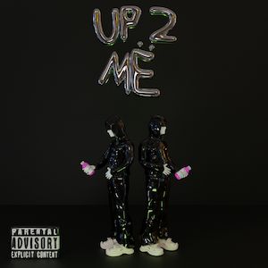
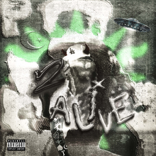

 Up 2 Me (stylized as Up 2 Më) is the debut studio album by American rapper Yeat. It was released on September 10, 2021 through Interscope Records, Foundation Media, and Twizzy Rich. The album features a guest appearance from fellow rapper SeptembersRich. The album's lead single, Gët Busy, was released on September 1, 2021, nine days before the album. The album’s artwork was made by Internet Girlfriend, a popular graphic designer in the internet music scene.
 2 Alive (stylized as 2 Alivë) is the second studio album by American rapper Yeat. It was released on February 18, 2022, by Geffen Records, Interscope Records, Field Trip Recordings, Listen To The Kids and Twizzy Rich. The album features guest appearances from Young Thug, Gunna, Yung Kayo, Ken Carson, and SeptembersRich. The album was supported by one single, "Still Countin", which was released on February 11, 2022. The deluxe edition, titled 2 Alive (Geek Pack), was released on April 1, 2022, with additional guest appearances by Lil Uzi Vert and Lancey Foux.